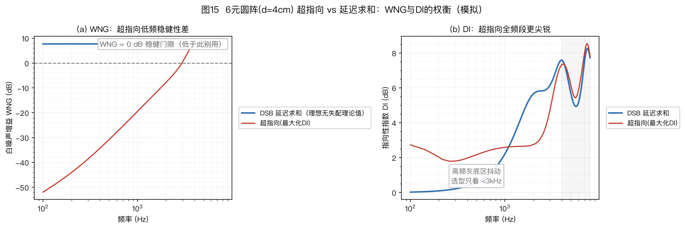
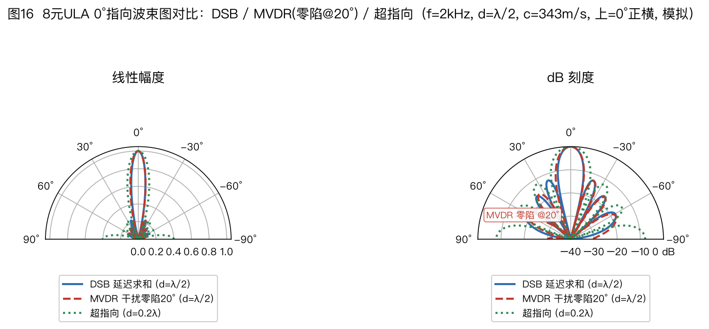
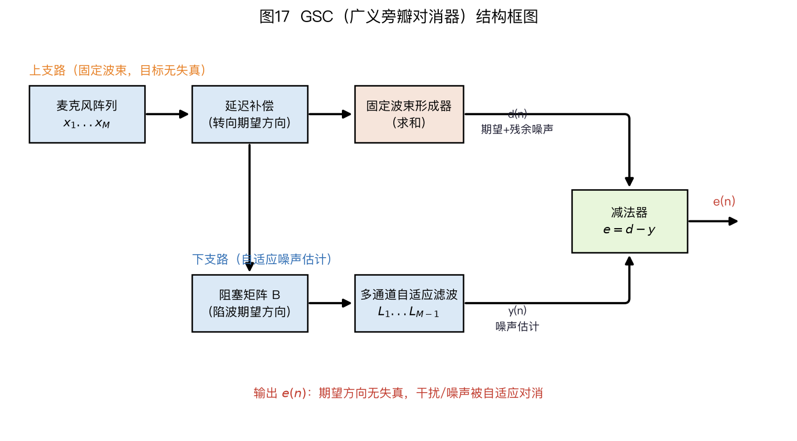

本页目录
- 5. 波束形成（Beamforming）
- 5.1 统一问题表述
- 5.2 延迟求和波束形成器（Delay-and-Sum Beamformer，简称 DSB）：“合唱前先把大家对齐”
- 5.3 超指向与 WNG–DI 权衡：“拿稳健换尖锐”
- — 专栏：差分麦克风（DMA）——从一阶心形到高阶与神经差分
- 5.4 最小方差无失真响应
- 5.4补 稳健波束形成四招：失配从哪来，就从哪下药
- 5.5 线性约束最小方差（Linearly Constrained Minimum Variance，简称 LCMV）：多约束推广
- 5.6 广义旁瓣对消器（Generalized Sidelobe Canceller，简称 GSC）：把约束改装成“噪声对消器”
- 5.7 后置滤波
- — 5.7.1 语音存在概率 SPP：每个时频点的"有人吗"
- — 5.7.2 Wiener 后滤通用式：SPP 加权与 MWF 级联
- — 5.7.3 音乐噪声：压狠了的代价，与 trade-off 旋钮
- 5.8 球谐域波束形成（球阵专属）
- 5.9 深度神经网络（Deep Neural Network，简称 DNN）波束形成（2018 起成为研究热点，CHiME 挑战赛演进主线）
- 5.10 波束形成算法总对比
- — 专栏 5-D · Kumatani 精读指引（CMU 课程讲义 DASR 线，约 800 字导读）
- 5.11 本章练习
⚠️ 本篇是系列教程第 5 篇（共 13 篇），可独立阅读，前后篇见下方导航。
🏠 首页导读：🏠 导读与导航 ｜ 上一篇：第 4 篇 · 声源定位（DOA 估计） ｜ 下一篇：第 6 篇 · 声学回声消除（AEC）
5. 波束形成（Beamforming）
5.1 统一问题表述
波束形成器对 $M$ 路信号做线性组合（频域）：
$$y(k,n) = \vec{w}^H(k,n)\,\vec{x}(k,n)\text{。}$$
设计目标：期望方向 $\theta_0$ 无失真（$\vec{w}^H\vec{a}(\theta_0)=1$）的前提下，最小化某类噪声/干扰的输出功率。所有经典波束形成器的差别只在：用什么噪声模型、加什么约束。 三类噪声的现实对应：
- 传感器白噪声：麦克风自噪声 → 对应度量白噪声增益（White Noise Gain，简称 WNG）；
- 弥散噪声：混响尾音、风噪（各向同性散射场，协方差矩阵 $\mathbf{\Gamma}$ 的第 $i,j$ 个元素为 $[\mathbf{\Gamma}]_{ij}=\mathrm{sinc}(2fd_{ij}/c)$，$d_{ij}$ 为两麦间距；本章 sinc 用归一化定义 $\mathrm{sinc}(x)=\sin(\pi x)/(\pi x)$，部分文献用 $\sin x/x$，对照时注意因子 $\pi$；口径与第 02 章的 sinc 定义互标一致，换算时先统一定义再套数）→ 对应度量指向性指数（Directivity Index，简称 DI——人话就是"灯有多聚"：DI 越高，这盏聚光灯照得越聚、漏到别处的光越少）；
- 定向点干扰：竞争说话人、电视 → 在干扰方向形成零陷。
前两类噪声各配一个量化坐标轴，先正式写下——后面全部权衡（DSB vs 超指向、WNG 约束、对角加载）都发生在这张平面上：
$$\mathrm{WNG} = \frac{|\vec{w}^H\vec{a}|^2}{\vec{w}^H\vec{w}},\qquad \mathrm{DI} = \frac{|\vec{w}^H\vec{a}|^2}{\vec{w}^H\mathbf{\Gamma}\vec{w}}\text{。}$$
WNG 是阵列对通道独立白噪声的输出 SNR 增益，DI 是对弥散噪声的输出 SNR 增益（取 $10\log_{10}$ 为 dB；无失真约束下分子恒为 1，比较分母即可）——这正是后面所有权衡的两个坐标轴；4 元 $\lambda/2$ 线阵的数值感见算例 2-2。
弥散场其实有两种常用模型，读论文时要分清：球面各向同性（声音从四面八方来，相干系数为 $\mathrm{sinc}$ 形，晚期混响用）与柱面各向同性（声音只从水平面各方向来，相干系数为零阶贝塞尔函数 $J_0(2\pi f d/c)$，会议室多人噪声更接近这种）Habets, JASA 2008。
时域还是频域实现？ 本章公式都写在频域（每个频点各有一组权重 $\vec{w}(k)$）——这是现代主流：STFT 把宽带语音切成一堆窄带问题（§2.5），逐频点求解，最后逆变换拼回波形。等价的时域形态叫滤波求和（filter-and-sum）：每路麦克风接一段 FIR 滤波器再求和，DSB 就是它的特例（滤波器退化为纯延迟）；其自适应版本的经典代表是 Frost 波束形成器（1972，时域 LCMV，用 LMS 在线更新）。频域实现计算省、约束好加、可利用语音的时频稀疏性；时域实现算法延迟低，适合助听器等对延迟敏感的场景。
5.2 延迟求和波束形成器（Delay-and-Sum Beamformer，简称 DSB）：“合唱前先把大家对齐”
$\vec{w}_{DSB} = \frac{1}{M}\vec{a}(\theta_0)$：按导向矢量把各通道时延补偿后等权相加，目标方向同相叠加（增益 $M$ 倍），其他方向因未对齐而部分抵消。
手算一遍（强烈建议跟着算，一遍胜过读十遍）：2 麦相距 $d=4$ cm，声源与阵列正横方向夹角 $30°$（从正横量角，§2.1 约定，本章统一用此约定），频率 $f=1$ kHz。 1. 时延差：$\Delta\tau = \frac{d\sin 30°}{c} = \frac{0.04\times0.5}{343} \approx 58.3$ μs； 2. 相位差：$\Delta\phi = 2\pi f\Delta\tau = 2\pi\times1000\times58.3\mu s \approx 0.366$ rad ≈ 21°； 3. 导向矢量（以麦 1 为参考）：$\vec{a} = [1,\ e^{-\mathrm{j}0.366}]^\top$； 4. DSB 权重：$\vec{w} = \vec{a}/2 = [0.5,\ 0.5e^{-\mathrm{j}0.366}]^\top$，验证无失真约束：$\vec{w}^H\vec{a} = \frac{1}{2}(1 + e^{\mathrm{j}0.366}e^{-\mathrm{j}0.366}) = 1$ ✓； 5. 含义：麦 2 的信号乘上 $e^{+\mathrm{j}0.366}$ 后恰好把落后的相位补回来，两路同相相加：信号幅度 ×2 → 信号能量翻两番（×4），白噪功率只翻倍（×2）——SNR 净赚 2 倍 = 3 dB（$10\log_{10}2$）；写成 $\vec{w}=\vec{a}/M$ 的“平均相加”等价形式，则是信号不变、噪声功率减半。这正是阵列增益公式 $10\log_{10}M$ 在 $M=2$ 时的情形。
波束图是怎么算出来的（等比数列求和，四步——看懂这个，主瓣宽度公式就不再是背诵）： 1. 把波束指向 $\theta_0$ 后，去测另一个方向 $\theta$ 的输出：各通道先按 $\theta_0$ 补偿相位，再求和。记相邻两麦的残余相位差 $\psi = \dfrac{2\pi d}{\lambda}(\sin\theta - \sin\theta_0)$，则第 $m$ 个麦在求和时带着因子 $e^{\mathrm{j}m\psi}$； 2. 输出幅度就是等比数列求和（公比 $e^{\mathrm{j}\psi}$）： $$B(\psi) = \sum_{m=0}^{M-1} e^{\mathrm{j}m\psi} = e^{\mathrm{j}(M-1)\psi/2}\,\frac{\sin(M\psi/2)}{\sin(\psi/2)}$$ 3. 取模：$|B| = \left|\dfrac{\sin(M\psi/2)}{\sin(\psi/2)}\right|$。$\psi=0$（即 $\theta=\theta_0$，目标方向）时分子分母都趋于零，取极限得最大值 $M$——同相叠加，分毫不差；$\psi$ 增大时分子振荡、分母增大，输出一路下跌并周期性起伏——主瓣和旁瓣就是这么长出来的； 4. 主瓣边缘：第一个零点在 $M\psi/2 = \pi$ 即 $\psi = 2\pi/M$，换算回角度得“零点到零点”宽度 $= 2\lambda/(Md)$，半功率宽度 $\approx 0.886\lambda/(Md)$——§2.6 的主瓣宽度公式就是这么来的：孔径越大、频率越高，主瓣越窄。（口径：本报告 HPBW 一律按有效孔径 $(M-1)d$，大 $M$ 近似下写作 $Md$，见 §2.6 与算例 3-4。）
顺带说旁瓣：均匀加权（相当于矩形窗）的第一旁瓣只有 −13 dB——这是矩形窗谱 $\sin(M\psi/2)/\sin(\psi/2)$ 的固有形状决定的，对付强定向干扰往往不够用。给各通道改用非均匀加权（如 Dolph–Chebyshev 加权）可以把旁瓣压到任意指定电平，代价是主瓣展宽——旁瓣电平、主瓣宽度、孔径三者只能任选两个，这是阵列设计的经典权衡。
WNG 上限是怎么算出来的（两步，柯西-施瓦茨不等式）： 1. 代入 DSB 权重 $\vec{w} = \vec{a}/M$：$\mathrm{WNG} = \dfrac{|\vec{w}^H\vec{a}|^2}{\|\vec{w}\|^2} = \dfrac{|\vec{a}^H\vec{a}/M|^2}{\|\vec{a}\|^2/M^2} = \dfrac{1}{M/M^2} = M$——所以 DSB 的白噪增益恰好是 $10\log_{10}M$ dB； 2. 为什么这是上限：柯西-施瓦茨不等式说 $|\vec{w}^H\vec{a}| \le \|\vec{w}\|\,\|\vec{a}\|$，于是 $\mathrm{WNG} \le \|\vec{a}\|^2 = M$，等号成立当且仅当 $\vec{w} \propto \vec{a}$（就是 DSB）。“DSB 对白噪声最稳”不是经验，是定理——它的平庸（DI 低）是用尽了全部稳健性换来的。
- 优点：WNG 最优（$10\log_{10}M$ dB）、目标永无失真、对误差无条件稳健；
- 缺点：DI 平庸、无干扰零陷能力——课程讲义引用的球阵/圆阵实验称小阵列 DSB 几乎无法改善识别率。Kumatani et al.
它是“下限保底”，也是一切自适应算法的初始值。
5.3 超指向与 WNG–DI 权衡：“拿稳健换尖锐”
在期望方向无失真约束下最大化 DI（等价于 MVDR 对阵各向同性噪声）：
$$\min_{\vec{w}}\ \vec{w}^H\mathbf{\Gamma}\vec{w} \quad \text{s.t.}\ \ \vec{w}^H\vec{a}(\theta_0)=1\text{，} \;\Rightarrow\; \vec{w}_{SD} = \frac{\mathbf{\Gamma}^{-1}\vec{a}}{\vec{a}^H\mathbf{\Gamma}^{-1}\vec{a}}\text{。}$$
（推导与式(5-1)是同一台拉格朗日机器，只是把噪声协方差 $\mathbf{R}_{nn}$ 换成弥散噪声相干矩阵 $\mathbf{\Gamma}$，完整四步见 §5.4。）
物理本质：小间距下让相邻麦克风信号相减（差分），合成比物理尺寸“看起来”尖锐得多的指向性（“小孔径打出大指向”）。代价：低频 WNG 暴跌（对麦失配、自噪声极度敏感），混响场中模型失配会带来信号失真。工程上必须加 WNG 约束（$\vec{w}^H\vec{w}\le\delta$ 的稳健超指向），或分频段设计（低频用带 WNG 约束的稳健超指向补指向性——kd 小时 DSB 几乎无指向性，超指向能小孔径打出大指向；高频用 DSB——高频段 $\mathbf{\Gamma}\approx\mathbf{I}$，超指向解本来就退化成 DSB）。课程讲义引用的实验称小尺寸球阵上的超指向在所比条件下优于线阵方案。[Kumatani et al.（出处同 §5.2 引文）]
算例 5-1：超指向的权重爆炸——“大象减大象得蚂蚁”（对应脚本 Scripts/make_figures.py::fig_wng_di，改间距改频率可复现图15）
题设：2 麦小间距 $d=0.05\lambda$，弥散噪声相干矩阵 $\mathbf{\Gamma} = \begin{bmatrix}1 & \mathrm{sinc}(0.1)\\ \mathrm{sinc}(0.1) & 1\end{bmatrix}$（§5.1：$[\mathbf{\Gamma}]_{ij} = \mathrm{sinc}(2d_{ij}/\lambda)$，这里 $\mathrm{sinc}(x) = \sin(\pi x)/(\pi x)$，$\mathrm{sinc}(0.1) = \dfrac{\sin(0.1\pi)}{0.1\pi} \approx 0.9836$）。超指向权重 $\vec{w}_{SD} = \dfrac{\mathbf{\Gamma}^{-1}\vec{a}}{\vec{a}^H\mathbf{\Gamma}^{-1}\vec{a}}$（§5.3）。
第 1 步：先看 $\mathbf{\Gamma}^{-1}$ 已经“病”了
$$\det\mathbf{\Gamma} = 1 - 0.9836^2 = 0.0325,\qquad \mathbf{\Gamma}^{-1} = \frac{1}{0.0325}\begin{bmatrix}1 & -0.9836\\ -0.9836 & 1\end{bmatrix} \approx \begin{bmatrix}30.80 & -30.29\\ -30.29 & 30.80\end{bmatrix}$$
间距小 → 两麦噪声几乎完全相干（$\rho = 0.9836$）→ $\mathbf{\Gamma}$ 接近奇异 → 逆矩阵元素冲到 30 量级。大的还没来，这只是前奏。
第 2 步（一个重要的先搞清楚的事）：指向正横时什么也不会发生
若 $\theta_0 = 0°$，则 $\vec{a}_0 = [1, 1]^\top$ 恰好是 $\mathbf{\Gamma}$ 的特征向量（$\mathbf{\Gamma}\vec{a}_0 = (1+\rho)\vec{a}_0$），于是 $\mathbf{\Gamma}^{-1}\vec{a}_0 = \vec{a}_0/(1+\rho) \propto \vec{a}_0$，归一化后
$$\vec{w}_{SD} = [0.5,\ 0.5]^\top = \vec{w}_{DSB},\qquad \mathrm{WNG} = +3.0\ \mathrm{dB}$$
——超指向解退化成普通延迟求和！物理原因：正横方向上两麦本来就同相，没有“差分”可做。2 麦阵列的超指向增益只存在于端射方向（沿两麦连线看），这正是一阶差分麦克风（DMA，§5.3）都按端射摆的原因。所以下面把波束指向 $\theta_0 = 90°$（端射）再算。
第 3 步：端射指向的权重
$\psi = 2\pi\times0.05\times\sin90° = 0.1\pi \approx 0.3142$ rad（18°），$\vec{a} = [1,\ e^{-\mathrm{j}0.3142}]^\top = [1,\ 0.9511-0.3090\mathrm{j}]^\top$。
分子：$\mathbf{\Gamma}^{-1}\vec{a} \approx \begin{bmatrix}1.9869+9.3616\mathrm{j}\\ -1.0033-9.5174\mathrm{j}\end{bmatrix}$（已经接近 10 量级，且两分量近乎反号）；
分母：$\vec{a}^H\mathbf{\Gamma}^{-1}\vec{a} \approx 3.9737$（正实数）；
相除：
$$\vec{w}_{SD} \approx \begin{bmatrix}0.5000+2.3559\mathrm{j}\\ -0.2525-2.3951\mathrm{j}\end{bmatrix},\qquad |w_1| = |w_2| \approx 2.41$$
第 4 步：验证无失真约束——看相消现场
$$\vec{w}^H\vec{a} = \underbrace{(0.5000-2.3559\mathrm{j})}_{w_1^*\cdot a_1} + \underbrace{(0.5000+2.3559\mathrm{j})}_{w_2^*\cdot a_2} = 1\ \checkmark$$
每一项的模长都是 2.41（比最终结果还大 2 倍多），两项虚部 $\mp2.356\mathrm{j}$ 理论上精确对消（小数舍入后仍剩干干净净的 1）。输出信号靠两项大幅相消剩 1——权重模长 2.41，对失配极敏感，这就是差分型波束形成的数学面目。
第 5 步：算 WNG，看代价
$$\|\vec{w}\|^2 = 2.41^2 + 2.41^2 \approx 11.60,\qquad \mathrm{WNG} = 10\log_{10}\frac{1}{11.60} \approx \mathbf{-10.6\ dB}$$
对照：同一指向的 DSB 是 +3.0 dB。负数 WNG 的物理含义：各麦自噪声（热噪声、ADC 噪声）互相独立，叠加时被权重能量放大 11.6 倍——自噪声比单麦还响 10.6 dB。换来的是 DI 从 DSB 的约 0 dB 提升到 $\dfrac{1}{\vec{w}^H\mathbf{\Gamma}\vec{w}} = 3.97$ 即 +6.0 dB（恰为 2 元阵超指向的理论上限）。拿 13.6 dB 的稳健性换 6 dB 的指向性——这就是 §5.3 说的“拿稳健换尖锐”。
第 6 步：失配有多要命
给麦 2 加 1% 的增益失配（$\vec{a}$ 第二分量乘 1.01，消费级 MEMS 麦克风 ±1 dB 的一致性规格里这很常见）：
$$\vec{w}^H\vec{a}_{mis} = 1.0050 + 0.0236\mathrm{j}\text{。}$$目标响应误差幅度约 $2.4\%$。
对照 DSB 同样失配只产生 0.5% 误差——超指向把失配放大了约 5 倍，且放大倍数与权重模长同步增长。相位失配更敏感：麦 2 相位偏 1°，目标方向增益偏移约 0.37 dB（方向取决于偏差符号；$d=0.01\lambda$ 时恶化到约 2 dB），零陷和旁瓣随之变形。再叠加第 5 步的自噪声放大 11.6 倍——这就是为什么裸超指向没法直接用，工程上必须加 WNG 约束或对角加载（§5.4）。
第 7 步：间距越小，爆炸越狠（同样指向端射 90°）：
| $d$ | $0.5\lambda$ | $0.1\lambda$ | $0.05\lambda$ | $0.02\lambda$ | $0.01\lambda$ |
|---|---|---|---|---|---|
| 权重模长 $|w_i|$ | 0.50 | 1.24 | 2.41 | 5.98 | 11.94 |
| WNG | +3.0 dB | −4.9 dB | −10.6 dB | −18.5 dB | −24.6 dB |
规律：间距每减半，权重模长约翻倍、WNG 掉约 6 dB（权重 $\propto \lambda/d$，白噪放大 $\propto(\lambda/d)^2$）。TWS 耳机那种几毫米的间距对上 1 kHz（$\lambda=34$ cm，$d\approx0.01\lambda$）就落在最后一行——权重十几、WNG −25 dB，任何微小的麦间失配都会被放大成灾难。超指向的全部工程难度，就在这张表里。

看什么：只看两条线的走势——超指向那条（高 DI）在低频段 WNG 一路暴跌（算例 5-1 最小一行到 −25 dB），DSB 的 WNG 则恒定在 $10\log_{10}M$；频率越低，两条线的剪刀差张得越大，这就是“拿稳健换尖锐”落在图上的样子。
差分麦克风阵列（Differential Microphone Array，简称 DMA）是超指向的时域形态：一阶 DMA 输出 $y(t)=x_1(t)-g\,x_2(t-\tau)$，复数增益 $g$ 与内时延 $\tau$ 共同决定心形/超心形/8 字形（$\tau=0$ 且 $g=1$ 时为偶极——纯实增益相减只能得到前后对称的 8 字形族，心形必须“延迟+相减”，完整的双麦推导见算例 3-1；端射双麦即一阶 DMA），多级差分叠加成更高阶指向族；频率无关的恒定波束、尺寸极小（TWS 耳机可用），但 WNG 差、对麦距与增益失配极敏感。
波束诊断 4 件套（超指向/MVDR 落地前必查）：算完权重先别急着听效果，把下面四个数跑一遍，大部分“仿真很好、实测翻车”在这里就能提前发现——
- WNG 余量：算 $\mathrm{WNG}=1/\|\vec{w}\|^2$（无失真约束下），再对照麦克风一致性规格。经验线：WNG 高于 −10 dB 一般可接受；−10~−20 dB 必须做通道标定；低于 −20 dB（如算例 5-1 的 $d=0.01\lambda$ 行）意味着自噪声被放大 100 倍以上，裸上机基本等于啸叫发生器，先加白噪声增益约束或对角加载（做法见 §5.4）再谈其他；
- 条件数：算 $\mathbf{\Gamma}$ 或 $\hat{\mathbf{R}}_{nn}$ 的条件数 $\kappa=\lambda_{\max}/\lambda_{\min}$。$\kappa$ 超过 $10^3$ 量级时，求逆结果对估计误差极敏感——此时要么加对角加载（§5.4），要么降阶/减约束。算例 5-1 里 $\mathbf{\Gamma}$ 的行列式只有 0.0325，就是条件数告警的实例；
- 削波率：把设计好的权重套到一段真实录音（或按目标电平仿真的信号）上，看输出有多少采样点超出满量程。超指向权重模长动辄几到十几（如算例 5-1 的 2.41、11.94），突发大声压下极易削波——削掉的峰顶就是非线性失真，后级语音识别与听感一起崩。超标时要么降权重能量（等价于收紧 WNG 约束），要么在链路里留动态余量；
- 通道失配灵敏度：给导向矢量逐通道加 ±1 dB 增益扰动和 ±2° 相位扰动（消费级硅麦克风的典型一致性范围），看目标响应 $|\vec{w}^H\vec{a}_{mis}-1|$ 恶化多少。算例 5-1 第 6 步演示过：1% 增益失配带来 2.4% 目标误差，是 DSB 的 5 倍。若扰动后误差超过 5% 或零陷偏移超过主瓣宽度的一半，说明该设计对硬件过于挑剔，要么放宽约束、要么换标定更好的麦克风。
专栏：差分麦克风（DMA）——从一阶心形到高阶与神经差分
上一节末尾说 DMA 是“超指向的时域形态”，这里把这句话展开：它到底差分了什么、心形从哪来、为什么能做小、以及它和现在研究里的神经差分是什么关系。
一阶差分原理（一句话）：两个相距很近的麦克风，远场声波到达时只差一个微小延迟；把其中一路延迟后再相减，直达方向一致的成分相减相消、掠过方向有相位差的成分相减相长——减法本身就是空间滤波。输出写成 $y(t)=x_1(t)-g\,x_2(t-\tau)$：$g$ 是复数增益（调两路的幅度配比），$\tau$ 是内部延迟（调相减前补多少相位回来），换一组 $(g,\tau)$ 就换一种指向形状。
心形是怎么配出来的（端射双麦）：设声音从 0°（正对麦 1 一侧）来，两麦延迟差为 $\tau_0=d/c$。取 $g=1$、$\tau=\tau_0$，则 0° 方向两路同相相减得零——这是在正前方打出一个零点；而 180°（正后方）来的声音在两麦间多走了一个来回，相减反而相长——后方保留。零点在前、波瓣在后的形状就是心形（cardioid）：前瓣抑制、后瓣拾取。若把零点位置从 180° 挪到 ±120° 附近（调 $g$ 与 $\tau$ 的配比），过渡带压得更窄但后方冒出两个小旁瓣，这就是超心形（supercardioid）与8 字形（figure-8）家族的区别——同一套减法硬件，参数不同、零点位置不同。注意心形必须“延迟+相减”配合：$\tau=0$ 且 $g=1$ 的纯实数相减只能得到前后对称的偶极子（dipole），变不出前后不对称的心形。
高阶 DMA（拿级联换更窄的波束）：把多个一阶差分单元串起来（前级的输出做后级的输入），$N$ 级级联就是 $N$ 阶 DMA，指向性随阶数变窄（理想指向性指数随阶数线性增长），且整套结构仍然只用加减延迟、尺寸可以做得很小——助听器、真无线耳机里塞的就是它。代价同样级联放大：每加一阶，白噪声增益再掉一截，对麦克风间距与增益一致性的要求再严一档；所以三阶以上很少裸用，一般要配均衡或与超指向的白噪声增益约束联合设计。
高阶 DMA 设计对照表（端射摆位，一阶原型取心形/超心形族）：阶数每加一，零点多一个、波束窄一圈、白噪增益掉一截——选阶数就是在这三者之间点菜。
| 阶数 $N$ | 零点数（理想） | 典型形状举例 | 理想 DI（端射） | WNG 趋势 | 失配敏感度 | 适用 |
|---|---|---|---|---|---|---|
| 1 | 1 | 心形（零点在 180°）、超心形（零点约 ±120°）、8 字形 | 约 4~6 dB（一阶超心形约 4 dB） | 基准（已比 DSB 低） | 敏感 | TWS 通话、助听器 |
| 2 | 2 | 二阶心形/超心形组合，旁瓣出现 | 约 6~9 dB | 再掉约 6 dB | 更严（间距+增益双标定） | 可穿戴近场拾音 |
| 3 | 3 | 三阶组合，主瓣更窄、旁瓣更多 | 约 9~12 dB | 裸用多半不可接受 | 严苛（一般要配均衡） | 实验室/配约束用 |
| ≥4 | ≥4 | 理论可继续变窄 | 理论继续涨，实际被失配吃掉 | 崩（除非强约束） | 工程上不推荐裸用 | 只做理论对照 |
读法：这张表是"理想值"，实测 DI 还要被麦失配、间距误差、混响逐项打折；三阶以上那一行的意思是"公式上还能涨，现实里涨不动"。落地时先看麦克风一致性规格能撑住哪一行，再反推敢用几阶——顺序别反。
神经差分（解析骨架 + 学习参数）：近年小型设备上的做法是把 $(g,\tau)$、级联系数乃至阶数选择做成可学习参数，外面包一层可转向的高阶差分结构，用数据去学最适合真实佩戴、真实混响的参数，物理结构保证波束形状可解释、参数数量少、端侧跑得动（§13.3 第 4 条）。理解成一句话：差分结构是“出厂自带的形状”，神经网络是“到用户耳朵上再微调的螺丝刀”——这正是第 5.9 节“掩码 + 解析波束”思想在微型阵列上的对应物。
幕间小结 5-A · 保底段看完（DSB→超指向）：DSB 是下限保底，白噪下最稳但指向性平庸；超指向拿 WNG 换 DI，小孔径打出尖锐指向，低频权重爆炸、必须加约束。记住这对剪刀差，后面 MVDR 到稳健章全是在这张图上讨价还价。
5.4 最小方差无失真响应
思想一句话：最小方差无失真响应（Minimum Variance Distortionless Response，简称 MVDR）——“保护目标”的前提下“压掉一切能压的”：让目标方向的信号原样通过（约束），同时让总输出功率最小（优化）。
$$\min_{\vec{w}}\ \vec{w}^H\mathbf{R}_{nn}\vec{w} \quad \text{s.t.}\ \ \vec{w}^H\vec{a}(\theta_0)=1\text{。}$$
符号：$\mathbf{R}_{nn}$ 是噪声协方差矩阵（$M\times M$——它不仅知道噪声功率，还知道噪声来自 30° 的电视还是四面八方的混响）。（别和 §4.2 的标量互相关函数 $R(\tau)$ 混淆：$\mathbf{R}_{nn}$ 是矩阵，$R(\tau)$ 是时延的标量函数，名字像、身份完全不同。）
推导（拉格朗日乘子法，四步，每步都有物理读法）： 1. 把约束“定价”进目标：构造拉格朗日函数 $$L(\vec{w}, \lambda) = \vec{w}^H\mathbf{R}_{nn}\vec{w} + \lambda\big(\vec{w}^H\vec{a} - 1\big)$$ $\lambda$ 是拉格朗日乘子（标量）。原问题是“约束下求最小”，现在变成“无约束求 $L$ 的最小”——违反约束的权重会被 $L$ 惩罚； 2. 求梯度令零：复数向量求导用 Wirtinger 规则——把 $\vec{w}$ 和它的共轭 $\vec{w}^*$ 当成两个独立变量，对 $\vec{w}^*$ 求偏导： $$\frac{\partial L}{\partial \vec{w}^*} = \mathbf{R}_{nn}\vec{w} + \lambda\vec{a} = \vec{0}\quad\Rightarrow\quad \vec{w} = -\lambda\,\mathbf{R}_{nn}^{-1}\vec{a}$$ 物理读法：最优权重 = 经噪声协方差“白化”后的导向矢量，只差一个待定倍数——噪声大的方向被 $\mathbf{R}_{nn}^{-1}$ 自动压扁； 3. 用约束定倍数：把结果代回无失真约束 $\vec{w}^H\vec{a}=1$： $$-\lambda\,\vec{a}^H\mathbf{R}_{nn}^{-1}\vec{a} = 1 \quad\Rightarrow\quad \lambda = -\frac{1}{\vec{a}^H\mathbf{R}_{nn}^{-1}\vec{a}}$$ （分母 $\vec{a}^H\mathbf{R}_{nn}^{-1}\vec{a}$ 是正实数——$\mathbf{R}_{nn}$ 是协方差矩阵、正定，所以 $\lambda$ 是负实数，权重方向合理）； 4. 代回第 2 步，负负得正：
$$\boxed{\ \vec{w}_{MVDR} = \frac{\mathbf{R}_{nn}^{-1}\vec{a}}{\vec{a}^H\mathbf{R}_{nn}^{-1}\vec{a}}\ }\text{。}$$ (5-1)
（脚注：复约束 $\vec{w}^H\vec{a}=1$ 等价于两个实约束（实部、虚部各一），完整拉格朗日写法需加共轭项 $\lambda(\vec{w}^H\vec{a}-1)+\lambda^*(\vec{a}^H\vec{w}-1)$；Wirtinger 求导下两种写法结果相同，上面用紧凑写法。）
四步串起来的直觉：第 1 步是“把规矩折成罚款”——不满足无失真约束的权重在 $L$ 里自动变贵；第 2 步是“沿着噪声地形往下走”——梯度为零处停下，解必然长成“白化后的导向矢量”，噪声功率大的方向先被 $\mathbf{R}_{nn}^{-1}$ 压扁；第 3 步是“按保护目标定刻度”——倍数 $\lambda$ 的唯一作用是把目标方向增益精确钉到 1；第 4 步把刻度代回去，负负得正得到闭式解。记住这个顺序：定价 → 白化 → 定标 → 代回，后面 LCMV（§5.5）是同一台机器、约束从 1 条变成多条。
特例校准直觉：白噪声下 $\mathbf{R}_{nn}\propto\mathbf{I}$，MVDR 退化为 DSB；混有定向强干扰时自动在干扰方向挖零陷（图16 红线在 20° 的坑；注意图16 用 8 元阵、20° 干扰做演示，参数与下面算例 5-2 的 2 元阵、30° 干扰不同）。
算例 5-2：2 麦 MVDR 全程数值推导——零陷是怎么“自己长出来的”（对应脚本 Scripts/make_figures.py::fig_beampatterns，改干扰角可复现图16）
题设：2 麦，间距 $d=\lambda/2$；目标方向 $\theta_0=0°$（正横）；干扰来自 $\theta_i=30°$，干扰噪声功率比 INR $=10$（干扰功率是各麦白噪功率的 10 倍）。求 MVDR 权重 $\vec{w}_{MVDR} = \dfrac{\mathbf{R}_{nn}^{-1}\vec{a}}{\vec{a}^H\mathbf{R}_{nn}^{-1}\vec{a}}$（式(5-1)的闭式解），并验证它的两个承诺。
第 1 步：写出两个导向矢量
- 目标方向：$\psi_0 = \pi\sin 0° = 0$，所以 $\vec{a}_0 = [1,\ 1]^\top$；
- 干扰方向：$\psi_i = \pi\sin 30° = \dfrac{\pi}{2}$，所以 $\vec{a}_i = [1,\ e^{-\mathrm{j}\pi/2}]^\top = [1,\ -\mathrm{j}]^\top$（麦 2 比麦 1 相位落后 90°）。
第 2 步：构造噪声协方差矩阵 $\mathbf{R}_{nn}$
噪声模型 = 定向干扰 + 各麦独立白噪（功率归一化为 1）：
$$\mathbf{R}_{nn} = 10\cdot\vec{a}_i\vec{a}_i^H + \mathbf{I}$$
先算外积 $\vec{a}_i\vec{a}_i^H = \begin{bmatrix}1\\-\mathrm{j}\end{bmatrix}[1,\ \mathrm{j}] = \begin{bmatrix}1 & \mathrm{j}\\ -\mathrm{j} & 1\end{bmatrix}$（注意 $(\vec{a}_i\vec{a}_i^H)_{12} = 1\cdot(-\mathrm{j})^* = +\mathrm{j}$），于是
$$\mathbf{R}_{nn} = \begin{bmatrix}11 & 10\mathrm{j}\\ -10\mathrm{j} & 11\end{bmatrix}$$
读法：对角元 11 = 干扰功率 10 + 白噪功率 1（每个麦收到的总噪声功率）；非对角元 $\pm10\mathrm{j}$ 记录着“两麦噪声高度相关、且相位差 90°”——干扰的方向信息就藏在这两个非对角元里，这是 MVDR 能挖出零陷的全部依据。
第 3 步：求逆 $\mathbf{R}_{nn}^{-1}$
2×2 矩阵求逆公式 $\begin{bmatrix}p & q\\ r & s\end{bmatrix}^{-1} = \dfrac{1}{ps-qr}\begin{bmatrix}s & -q\\ -r & p\end{bmatrix}$。行列式：
$$\det\mathbf{R}_{nn} = 11\times11 - (10\mathrm{j})(-10\mathrm{j}) = 121 - 100 = 21$$
（注意 $(10\mathrm{j})(-10\mathrm{j}) = -100\mathrm{j}^2 = +100$——$\mathrm{j}^2=-1$，两个虚数相乘先得实数再参与加减。2×2 行列式对照：$\det\begin{bmatrix}p&q\\r&s\end{bmatrix}=ps-qr$，这里 $qr=(10\mathrm{j})(-10\mathrm{j})=+100$，$ps-qr=121-100=21$；与算例 5-1 第 1 步的 $\det\mathbf{\Gamma}=1-0.9836^2=0.0325$ 对照看：同样是 2×2 求逆，一个行列式 21（健康，条件数小），一个 0.0325（病态，逆矩阵元素冲到 30 量级）——行列式的量级就是求逆稳不稳的第一眼信号。）所以
$$\mathbf{R}_{nn}^{-1} = \frac{1}{21}\begin{bmatrix}11 & -10\mathrm{j}\\ 10\mathrm{j} & 11\end{bmatrix} \approx \begin{bmatrix}0.5238 & -0.4762\mathrm{j}\\ 0.4762\mathrm{j} & 0.5238\end{bmatrix}$$
第 4 步：算权重
分子：$\mathbf{R}_{nn}^{-1}\vec{a}_0 = \dfrac{1}{21}\begin{bmatrix}11-10\mathrm{j}\\ 10\mathrm{j}+11\end{bmatrix} \approx \begin{bmatrix}0.5238-0.4762\mathrm{j}\\ 0.5238+0.4762\mathrm{j}\end{bmatrix}$；
分母：$\vec{a}_0^H\mathbf{R}_{nn}^{-1}\vec{a}_0 = \dfrac{1}{21}\big[(11-10\mathrm{j})+(10\mathrm{j}+11)\big] = \dfrac{22}{21} \approx 1.0476$（正实数，与 §5.4 推导第 3 步的论断一致）；
相除：
$$\vec{w}_{MVDR} = \frac{1}{22}\begin{bmatrix}11-10\mathrm{j}\\ 11+10\mathrm{j}\end{bmatrix} = \begin{bmatrix}0.5000-0.4545\mathrm{j}\\ 0.5000+0.4545\mathrm{j}\end{bmatrix}$$
观察：两个权重模长相同（$\approx0.676$）、虚部符号相反——不是 DSB 的 $[0.5, 0.5]$ 了，MVDR 悄悄给两路加上了反号的相位偏转，这就是零陷的来源。
第 5 步：验证两个承诺
① 目标无失真：$\vec{w}^H\vec{a}_0 = (0.5+0.4545\mathrm{j})\cdot1 + (0.5-0.4545\mathrm{j})\cdot1 = 1$ ✓（两个虚部恰好抵消）；
② 干扰方向零陷：
$$\vec{w}^H\vec{a}_i = (0.5+\tfrac{5}{11}\mathrm{j})\cdot1 + (0.5-\tfrac{5}{11}\mathrm{j})(-\mathrm{j}) = \frac{1}{22}(1-\mathrm{j}) \approx 0.0455-0.0455\mathrm{j}$$
$|\vec{w}^H\vec{a}_i| = \dfrac{\sqrt{2}}{22} \approx 0.0643$，即 −23.8 dB。干扰被压到约 1/15.6 的幅度，输出功率 $10\times0.0643^2 \approx 0.041$，已远低于输出白噪水平（$\|\vec{w}\|^2 \approx 0.913$）——干扰实际上被“淹没”掉了。
为什么不是精确的 0？ 2 个麦只有 2 个复数自由度：1 个被无失真约束占用，剩下 1 个压干扰，压的深度随干扰强度（INR）增长而加深（本例 INR=10，残余约 −24 dB；INR 趋于无穷时趋于理想零陷）。关键在于：没人告诉 MVDR 干扰在 30°——零陷是它从 $\mathbf{R}_{nn}$ 非对角元里自己“读”出来的，这正是自适应与手工设计的分界。
第 6 步：看看波束图的关键 5 档（$|B(\theta)| = |\vec{w}^H\vec{a}(\theta)|$，完整曲线见图16）：
| 角度 | 增益 (dB) | 看点 |
|---|---|---|
| $0°$ | 0.00 | 无失真约束钉死 |
| $+30°$ | −23.84 | 零陷正对干扰 |
| $+15°$ | −5.05 | 过渡带，被连带压低 |
| $-30°$ | +2.61 | 无干扰一侧被抬高 |
| $+45°$ | −8.62 | 远旁瓣残余 |
读图：0° 钉死在 0 dB（约束），30° 处一个 −23.8 dB 的深坑（零陷），而波束图不再左右对称——干扰一侧（+θ）整体被压低，代价是无干扰一侧（−30° 附近）增益被抬高了 2.6 dB，那里若再来个新干扰就会漏进来。2 麦只有这点自由度，这已经是“保护目标”前提下数学上能做到的最好结果。
代价是多少：这组权重的 WNG $= 10\log_{10}(1/\|\vec{w}\|^2) = 10\log_{10}(1/0.9133) \approx +0.39$ dB，比 DSB 的 +3 dB 略低——用 2.6 dB 的白噪稳健性换来了 24 dB 的定向干扰抑制，这笔买卖很值（对比算例 5-1 的超指向，就知道什么叫“不值”）。

看什么：先认 0° 处的 0 dB（无失真约束把目标钉死，自适应线都过这点）；再找 20° 处的零陷深坑（MVDR 为压干扰主动挖的）；最后看主瓣——自适应线的峰比 DSB 窄一截。注意本图用 8 元阵、20° 干扰演示，参数与算例 5-2 的 2 元阵、30° 干扰不同（见 §5.4 特例注）。
工程落地三要点： 1. $\mathbf{R}_{nn}$ 从哪来：无目标帧估计（语音活动检测即 VAD 辅助）；语音场景经典做法是时频掩码（Time-Frequency mask，简称 TF-mask）——神经网络预测每个时频点是语音还是噪声，分别加权估出目标/噪声协方差（在 CHiME 系列远场语音识别挑战赛中验证有效的主流做法；这类掩码做法在完整系统里的效果证据见 §8.1）； 2. 病态与对角加载：小快拍下 $\hat{\mathbf{R}}^{-1}$ 病态，加 $\varepsilon\mathbf{I}$（相当于白噪增益约束的隐式实现；完整做法与代价表见 §5.4 末对角加载小节）； 3. 混响中约束对象应是相对传递函数（Relative Transfer Function，简称 RTF）（含直达+早期反射）：人话叫"证件照 vs 素颜"——自由场导向矢量 $\vec{a}(\theta_0)$ 是模特的证件照（棚拍、无瑕疵），真实混响房间里各麦收到的目标是"素颜生活照"（直达声 + 墙面几次早期反射叠出来的样子），长得跟证件照已经不太一样了。约束若还钉在证件照上，等于白保护了一个"模型里的目标"，真实目标反而被误伤。RTF 就是拿各麦相对参考麦的真实传递函数（含直达+早期反射）当约束对象，按生活照来保护，混响房里才不跑偏。
三种说法其实是一回事：对角加载 $\hat{\mathbf{R}}+\varepsilon\mathbf{I}$ ≡ WNG 二次约束 $\vec{w}^H\vec{w}\le\delta$ ≡ 正则化——人话叫"往噪声地图里掺沙子"：本来估计出来的噪声协方差是一张"哪里有干扰"的干净地图，对角加载就是往这张地图上均匀撒一把细沙（各向同性白噪），地图上原来又深又尖的坑（小特征值方向）被沙子填平一截，权重就不敢顺着那些坑长成算例 5-1 里那种靠大幅相消过日子的怪物。经验取值：$\varepsilon$ 取平均特征值 $\mathrm{tr}(\hat{\mathbf{R}})/M$ 的 $10^{-2}\sim10^{-1}$ 量级；它同时压制协方差估计误差（小快拍）与失配敏感性（麦不一致、指向误差），是 MVDR/超指向落地前默认必加的一步。
对角加载的代价表（$\varepsilon$ 从小到大）：
| $\varepsilon$ 取值 | 相对平均特征值 | 白噪声增益 | 指向性/零陷深度 | 稳健性 | 适用场合 |
|---|---|---|---|---|---|
| 很小（$\sim10^{-3}$） | 几乎不掺假 | 接近理论值 | 几乎无损 | 差：小快拍下求逆仍可能病态 | 快拍充足、标定好的离线处理 |
| 中等（$10^{-2}\sim10^{-1}$） | 掺一点白噪 | 回升数 dB | 零陷变浅 1~3 dB | 好：估计误差与轻微失配被兜住 | 默认推荐，多数实时系统 |
| 很大（$\sim1$） | 白噪占主导 | 趋近 DSB 上限 | 退化：深零陷被抹平 | 过度保守：等于放弃自适应 | 只求稳的保底模式，或诊断用对照 |
读法：$\varepsilon$ 是"稳健"与"尖锐"之间的旋钮——往右拧，WNG 与条件数好转，零陷与指向性变差；算例 5-1 那种 WNG −10 dB 的设计，加上中等加载后一般能回到 −3 dB 以内，代价是 DI 掉 1~2 dB。调参时从 $10^{-2}$ 起步，看诊断 4 件套（§5.3 末）哪一项先达标就停手。
5.4补 稳健波束形成四招：失配从哪来，就从哪下药
对角加载是"撒沙子保底"，属于见效快、谁都能加的一招。但失配有好几种病因，只吃一种药不一定对症。这一节把另外四招一次讲清：每招先说它治哪种失配，再说它怎么治、代价是什么，最后给一张"哪种失配吃哪种药"的选型表。先统一病因清单——后面四招分别认领：
- 病因 A：导向矢量失配（DOA 估计偏几度、麦增益/相位不一致、阵列标定不准）：约束钉错了地方，目标被自己人误伤；
- 病因 B：协方差估计误差（快拍少、噪声非平稳、语音泄漏进噪声估计）：$\hat{\mathbf{R}}_{nn}$ 里混进了不该有的东西，求逆后误差被放大；
- 病因 C：相干干扰/混响（强早期反射、相干多径）：信号子空间与干扰子空间粘在一起，MVDR 的零陷挖歪；
- 病因 D：目标自消（含目标的协方差 + 失配约束双碰头）：训练数据里混进目标，自适应把目标也当干扰压掉，GSC 语尾被吃就是这一型。
第 1 招：最差情况优化（Worst-Case Optimization）——按"最坏情况"留余量。治病因 A。思路很直白：承认真实导向矢量落在理想值附近一个球里（$\|\vec{a}_{true}-\vec{a}_0\|\le\epsilon$），优化时不赌"导向恰好是对的"，而是保证球里最坏的那个也能过关。数学上这等价于在 MVDR 目标里自动多出一项对角加载——所以它常被说成"有理论出处的对角加载"：$\epsilon$ 给出了加载量 $\varepsilon$ 该取多大的依据，而不是拍脑袋试。代价：球半径 $\epsilon$ 取大了等于过度保守，DI 与零陷深度一起缩水；$\epsilon$ 本身要按 DOA 误差范围与麦一致性规格来定，定不准则白白损失性能。人话：出门前不知道今天刮什么风，就按"最大风力"多穿一件——穿多了热（性能损），穿少了冻（失真），分寸全在 $\epsilon$。
第 2 招：特征空间波束形成（Eigenspace Beamforming）——只在"信号说了算"的子空间里解。治病因 D（兼治 B）。做法：对含目标的采样协方差做特征分解，把权重投影到大特征值张成的信号子空间里再求解。混进来的小特征值方向（噪声子空间）本来就是误差重灾区，直接不让权重往那边长，目标自消自然被掐掉大半。代价：子空间维数（几个大特征值算"信号"）要选，选错会把弱目标也投影掉；低信噪比下信号与噪声特征值混在一起，分界模糊时效果打折。人话：开会只听几个说了算的人的，小声嘀咕的（噪声子空间）直接静音——可万一真正对的人恰好小声，就误伤了。
第 3 招：协方差重构（Covariance Reconstruction）——把"脏"协方差洗干净再求逆。治病因 B。MVDR 要的是纯噪声协方差 $\mathbf{R}_{nn}$，可实际用 VAD 切出来的"噪声段"里常混着目标残留、混响尾巴。重构类方法（代表如 Capon 谱积分重构：先在"非目标区域"估计干扰加噪声的空间谱，再积分重建出一块不含目标成分的 $\hat{\mathbf{R}}_{nn}$）等于先把协方差里的目标成分洗掉，再交给 MVDR 求逆。代价：多一步谱估计与积分，计算量上去；积分区域划错（把干扰划出去了）等于亲手扔掉零陷依据。人话：做菜前先把混进米里的沙子挑出来，而不是指望炒的时候沙子自己消失——挑米多花一道工序，但后面的求逆不会硌牙。
第 4 招：前后向空间平滑（Forward-Backward Spatial Smoothing）——专治相干。治病因 C。均匀线阵上把阵列切成几个互相重叠的子阵，子阵协方差平均一下（前向平滑），再把共轭翻转的后向项也平均进来（前后向平滑）。相干信号在不同子阵上的相位关系被打散 decorrelate，粘在一起的子空间被撕开，MVDR 的零陷重新找准方向。代价：子阵变短，有效孔径缩水（主瓣变宽、自由度减少）；子阵数与去相关效果、孔径损失直接换比。人话：一队人齐步走（相干）看起来像一个人，空间平滑就是让各排错开半步再看，人就分开了——代价是队伍占地变小（孔径缩水）。
选型表：失配类型 → 首选方法 → 备选（对角加载默认先加，下表是它兜不住时再加的）：
| 症状 | 病因 | 首选 | 备选/联合 | 一句话医嘱 |
|---|---|---|---|---|
| DOA 偏 2~3° 目标就被吃 | A 导向失配 | 最差情况优化（$\epsilon$ 按 DOA 误差定） | 导数约束（LCMV，§5.5）把主瓣做平 | 先看 DOA 模块的误差分布再定 $\epsilon$ |
| 换一批麦，同样的权重效果大变 | A 麦不一致 | 通道标定 + 最差情况优化 | 对角加载兜底 | 标定是正道，算法是止痛片 |
| 噪声段混进语音，一开自适应就吃语尾 | D 目标自消 | 特征空间投影 | SPP 门控步长（§5.7） | 先把 VAD/SPP 门修好，再谈投影 |
| 快拍少、噪声时变，求逆动不动病态 | B 估计误差 | 对角加载（默认）+ 协方差重构 | 减约束/降阶 | 小快拍下别贪多约束 |
| 强早期反射、相干干扰，零陷挖歪 | C 相干 | 前后向空间平滑 | RTF 约束（§5.4 工程要点） | ULA 才有子阵可切，非均匀阵先想别的招 |
| 低频 WNG 崩、权重模长上天 | 超指向固有 | WNG 约束/对角加载，分频段设计 | 降阶 DMA | 见算例 5-1 第 7 步那张表，对号入座 |
用表姿势：先拿诊断 4 件套（§5.3 末）定位症状在哪一行，再按"首选→备选"顺序加药，每加一味都重跑一遍四个数——稳健性设计是"症状→病因→药"的顺序，反过来"先加药再看病"多半过度保守。
幕间小结 5-B · 稳健章一句：MVDR 给出最优解，稳健章回答它在现实里怎么不翻车——对角加载保底，四招对症下药，诊断 4 件套是体检表。
5.5 线性约束最小方差（Linearly Constrained Minimum Variance，简称 LCMV）：多约束推广
多个线性约束写成矩阵形式 $\mathbf{C}^H\vec{w}=\vec{f}$（$\mathbf{C}$：约束矩阵，每列是一个约束方向/约束向量；$\vec{f}$：对应的约束值向量），LCMV 闭式解为：
$$\vec{w}_{LCMV} = \mathbf{R}^{-1}\mathbf{C}\big(\mathbf{C}^H\mathbf{R}^{-1}\mathbf{C}\big)^{-1}\vec{f}\text{。}$$ (5-2)
（$\mathbf{R}$ 可以是噪声协方差 $\mathbf{R}_{nn}$，也可以是含目标的 $\mathbf{R}_{xx}$——小快拍下常用后者，代价是目标自消风险，见 §5.4 工程要点。）
推导：与式(5-1)一模一样的拉格朗日机器，只是标量乘子 $\lambda$ 升级为向量 $\vec{\lambda}$（每条约束配一个）：构造 $L = \vec{w}^H\mathbf{R}\vec{w} + \vec{\lambda}^H(\mathbf{C}^H\vec{w} - \vec{f})$，对 $\vec{w}^*$ 求导令零得 $\vec{w} = -\mathbf{R}^{-1}\mathbf{C}\vec{\lambda}$；代入约束 $\mathbf{C}^H\vec{w} = \vec{f}$ 解出 $\vec{\lambda} = -(\mathbf{C}^H\mathbf{R}^{-1}\mathbf{C})^{-1}\vec{f}$；代回即得上式。多约束的代价：除了逆 $M\times M$ 的 $\mathbf{R}$，多出一项逆 $K_c\times K_c$ 小矩阵 $(\mathbf{C}^H\mathbf{R}^{-1}\mathbf{C})$（$K_c$ 为约束条数，$K_c$ 越小越便宜）。
维度核对框（$\vec{\lambda}$ 到底是几维的）：约束有 $K_c$ 条，$\vec{f}$ 就是 $K_c\times1$ 向量；$\mathbf{C}$ 是 $M\times K_c$（每列一条约束），$\mathbf{C}^H\vec{w}$ 恰好 $K_c\times1$，与 $\vec{f}$ 对齐——所以 $\vec{\lambda}$ 也是 $K_c\times1$，一条约束配一个乘子，不多不少。中间那个小矩阵 $\mathbf{C}^H\mathbf{R}^{-1}\mathbf{C}$ 是 $K_c\times K_c$：约束越多它越大，求逆越贵。自由度账本：$M$ 个复数权重共 $M$ 个自由度，$K_c$ 条独立约束吃掉 $K_c$ 个，还剩 $M-K_c$ 个用来压噪声——$K_c=M$ 时（如算例 5-2补的 2 麦 2 约束）账上归零，权重被约束唯一钉死，自适应无事可做。
解的结构可以理解为“先白化、再钉约束”：$\mathbf{R}^{-1}$ 负责把干扰方向压扁，后半部分负责把权重精确钉在满足所有约束的子空间上。常用约束举例：①期望方向无失真（$f=1$）；②已知干扰方向强制零陷（$\vec{a}^H(\theta_i)\vec{w}=0$）；③导数约束——令波束图在期望方向处对角度的一阶导数为零，主瓣变得“平顶”，这样 DOA 估计有几度误差、或说话人稍微晃动时目标仍被保护，是抗指向误差的经典手段。
约束不是免费的：每条独立约束消耗一个自由度，$M$ 个麦最多承受约 $M-1$ 条有效约束；约束加得越多，剩余用来压噪声的自由度越少，WNG 随之恶化——LCMV 的设计艺术全在“约束够用就好”。
算例 5-2补：LCMV 双约束小算例——“保护目标 + 硬钉零陷”
题设：沿用算例 5-2 的 2 麦阵（$d=\lambda/2$，目标 0°，干扰 30°），但这次干扰方向已知，要求同时满足两条约束：目标方向增益为 1、干扰方向增益为 0。约束矩阵 $\mathbf{C}=[\vec{a}_0,\ \vec{a}_i]$（$2\times2$），约束值 $\vec{f}=[1,\ 0]^\top$，噪声取白噪 $\mathbf{R}=\mathbf{I}$（先看约束本身的效果，不掺自适应）。
求解：$\mathbf{R}=\mathbf{I}$ 时 $\mathbf{C}^H\mathbf{R}^{-1}\mathbf{C}=\mathbf{C}^H\mathbf{C}$。$\vec{a}_0=[1,1]^\top$，$\vec{a}_i=[1,-\mathrm{j}]^\top$，得 $\mathbf{C}^H\mathbf{C}=\begin{bmatrix}2 & 1-\mathrm{j}\\ 1+\mathrm{j} & 2\end{bmatrix}$，行列式 $=4-|1-\mathrm{j}|^2=2$，逆为 $\frac{1}{2}\begin{bmatrix}2 & -(1-\mathrm{j})\\ -(1+\mathrm{j}) & 2\end{bmatrix}$。$\vec{w}=\mathbf{C}(\mathbf{C}^H\mathbf{C})^{-1}\vec{f}$ 取逆矩阵第一列：$\vec{w}=\frac{1}{2}\big(2\vec{a}_0-(1+\mathrm{j})\vec{a}_i\big)$，展开得 $\vec{w}=[0.5-0.5\mathrm{j},\ 0.5+0.5\mathrm{j}]^\top$。
验证：$\vec{w}^H\vec{a}_0=(0.5+0.5\mathrm{j})+(0.5-0.5\mathrm{j})=1$ ✓；$\vec{w}^H\vec{a}_i=(0.5+0.5\mathrm{j})+(0.5-0.5\mathrm{j})(-\mathrm{j})=0$ ✓——干扰方向被精确钉死在零点。代价：$\|\vec{w}\|^2=1$，WNG $=0$ dB，比 DSB 的 +3 dB 低了 3 dB——2 个麦、2 条约束，自由度被约束吃光，一点压白噪的余地都没剩。对比算例 5-2 的 MVDR（WNG +0.39 dB、零陷 −23.8 dB）：MVDR 只约束目标、把干扰交给数据去压，零陷虽非理想零但 WNG 更好——这就是“硬约束零陷”与“自适应零陷”的区别：干扰方向已知且静止时 LCMV 更彻底；方向未知或干扰走动时 MVDR 更划算。
多通道维纳滤波（Multichannel Wiener Filter，简称 MWF）与之关系：MVDR 是无失真约束下的 MWF，常用于级联后置。MWF 有一个在助听器领域常用的显式权衡版本——语音失真加权多通道维纳滤波（Speech Distortion Weighted MWF，简称 SDW-MWF）（Doclo et al.）：直接最小化“残余噪声 + 加权语音失真”
$$J(\vec{w}) = E\{|n_{out}|^2\} + \frac{1}{\mu}\,E\{|s_{out}-s_{ref}|^2\}\quad\Rightarrow\quad \vec{w}_{SDW} = \big(\mathbf{R}_{ss} + \mu\mathbf{R}_{nn}\big)^{-1}\mathbf{R}_{ss}\,\vec{e}_r\text{。}$$
- $\mathbf{R}_{ss}, \mathbf{R}_{nn}$：目标与噪声协方差矩阵；$\vec{e}_r$：参考麦选择向量（第 $r$ 位为 1 的单位向量，即“以第 $r$ 个麦收到的目标为基准”）；
- $\mu$ 是旋钮：$\mu=1$ 就是普通 MWF（MMSE 最优）；$\mu>1$ 多压噪声、语音失真变大；$\mu\lt 1$ 保语音、降噪变弱。MVDR 相当于 $\mu\to\infty$ 且外加硬约束——三者是一家人。Doclo et al., Speech Communication 2007
LCMV 上面都是频域闭式写法，落到时域在线实现就是 Frost——下面把它的更新式和 GSC 的对照一次收拢在本节末，免得前后翻。
Frost 波束形成器（1972）：LCMV 的时域在线版。§5.1 末提过它是滤波求和的自适应代表，这里把更新式写出来：每路麦接一段 $J$ 抽头 FIR，第 $m$ 路第 $j$ 抽头权重记 $w_{m,j}$，全权重向量 $\vec{w}$ 共 $MJ$ 个系数。约束是"看目标方向"的线性约束 $\mathbf{C}^H\vec{w}=\vec{f}$（比如每列约束钉住一个抽头时刻的目标响应），更新分两步走：
$$\vec{w}(l+1) = \mathbf{P}\big[\vec{w}(l) - \mu\,y(l)\vec{x}(l)\big] + \vec{w}_q\text{。}$$
读法：方括号里是普通 LMS（输出 $y(l)$ 与输入 $\vec{x}(l)$ 相乘，沿着"让输出功率最小"的梯度走一步，步长 $\mu$）；外面的投影矩阵 $\mathbf{P}=\mathbf{I}-\mathbf{C}(\mathbf{C}^H\mathbf{C})^{-1}\mathbf{C}^H$ 负责把走偏的那一步拽回约束平面，$\vec{w}_q=\mathbf{C}(\mathbf{C}^H\mathbf{C})^{-1}\vec{f}$ 是满足约束的最小范数起点。两步一句人话：先按 LMS 往"输出最小"溜一小步，再被投影一把拽回"目标无失真"的绳子上——绳子（约束）全程绷着，所以目标永远不丢，溜的那一步只压掉了噪声。代价与 GSC 一脉相承：约束失配（指向偏、混响）同样导致目标泄漏进自适应环节，步长 $\mu$ 太大发散、太小跟不上非平稳干扰；时域实现的好处是延迟低（助听器喜欢），坏处是抽头数 $J$ 一大、收敛比频域 NLMS 慢。
Frost vs GSC 对照表（同一个 LCMV，两种穿法）：
| Frost（1972） | GSC | |
|---|---|---|
| 域 | 时域 FIR 抽头 | 频域逐频点（TF-GSC）或时域皆可 |
| 约束怎么装 | 投影矩阵 $\mathbf{P}$，每步拽回约束平面 | 结构吸收：固定上支路 + 阻塞矩阵，下支路无约束自适应 |
| 自适应算法 | LMS（含投影） | NLMS/RLS |
| 跟踪非平稳干扰 | 中（LMS 收敛慢） | 快（下支路纯噪声参考，对消直接） |
| 失配症状 | 目标泄漏进 LMS，约束平面本身钉歪 | 目标泄漏进阻塞矩阵下支路，被当干扰对消（语尾被吃） |
| 延迟 | 低（时域直接出样点） | 频域版有 STFT 帧延迟 |
| 一句话 | 约束是"每步检查的绳子" | 约束是"焊进电路的结构" |
上面 Frost 与对照表本就属于 LCMV 一节，这里收拢在节末，下一节看 GSC 怎么把同一套约束焊进结构里。
5.6 广义旁瓣对消器（Generalized Sidelobe Canceller，简称 GSC）：把约束改装成“噪声对消器”
广义旁瓣对消器把 LCMV 约束吸收进结构，分两条支路：

看什么：认两支路一滤波器——上支路固定延迟求和（输出目标加漏入噪声 $d$），下支路阻塞矩阵（目标被陷掉、只剩噪声参考 $u$），中间自适应滤波器学出系数 $h$；最后相减 $e=d-y$，干扰在这一步被抵消（数字全程见算例 5-3）。
- 上支路：延迟求和（固定波束），输出 $d$ = 目标 + 漏入噪声；
- 下支路：阻塞矩阵 $\mathbf{B}$（满足 $\mathbf{B}^H\vec{a}(\theta_0)=\vec{0}$，把目标方向陷掉）→ 纯噪声参考 → 多通道自适应滤波（NLMS/RLS）学出噪声副本 $y$；
- 相减 $e = d - y$：噪声对消、目标无损。
算例 5-3：GSC 数字走一遍——干扰是怎么被“减掉”的（对应脚本 Scripts/make_figures.py::fig_gsc，改步长可看收敛过程）
题设：2 麦，$d=\lambda/2$；目标 0°（正横），干扰 60°。按 §5.6 的 GSC 结构逐数走一遍：上支路延迟求和，下支路阻塞矩阵 $\mathbf{B} = [1,\ -1]^\top$（2×1，两路相减——这是 2 麦特例；$M$ 麦时 $\mathbf{B}$ 为 $M\times(M-1)$，常用相邻通道相减或取 $\vec{a}(\theta_0)$ 的正交补基），自适应滤波器退化为 1 个复数抽头 $h$（2 麦时阻塞后只剩 1 路噪声参考，滤波器只需 1 个系数）。
预备数字：$\psi_{60} = \pi\sin60° = 2.7207$ rad（155.9°），$\vec{a}(0°) = [1,\ 1]^\top$，$\vec{a}(60°) = [1,\ e^{-\mathrm{j}2.7207}]^\top = [1,\ -0.9127-0.4086\mathrm{j}]^\top$。
第 1 步：上支路（延迟求和）漏进多少干扰
上支路权重 $\vec{w}_u = [0.5,\ 0.5]^\top$。目标方向增益 $\vec{w}_u^H\vec{a}(0°) = 1$ ✓（无失真）；60° 方向的泄漏增益：
$$g_u = \vec{w}_u^H\vec{a}(60°) = \tfrac{1}{2}\big(1 + e^{-\mathrm{j}2.7207}\big) = 0.0436-0.2043\mathrm{j},\qquad |g_u| = |\cos\tfrac{\psi}{2}| = 0.2089\ (\text{−13.6 dB})$$
干扰在目标支路里还残留约 21% 的幅度——这就是图17 中“$d$ = 目标 + 漏入噪声”里那部分“漏入噪声”。
第 2 步：下支路把目标陷掉、只留干扰
验证阻塞：$\mathbf{B}^H\vec{a}(0°) = 1\times1 + (-1)\times1 = 0$ ✓——目标方向被精确陷掉，下支路里没有目标（这是整个结构的关键前提，§5.6 说的“阻塞矩阵失配”就是指这个 0 在实际中保不住）。干扰在下支路的增益：
$$g_\ell = \mathbf{B}^H\vec{a}(60°) = 1 - e^{-\mathrm{j}2.7207} = 1.9127+0.4086\mathrm{j},\qquad |g_\ell| = 2|\sin\tfrac{\psi}{2}| = 1.9559$$
两路相减反而把干扰放大了近 2 倍（因为 60° 方向上两麦相位差 155.9°，接近反相，相减近乎同相叠加）——没关系，它只是一份“干扰参考样本”。
第 3 步：拿一个具体快拍走一遍
设该频点目标谱 $s = 1$、干扰谱 $i = 1$（都是标量复数），则阵列快拍：
$$\vec{x} = \vec{a}(0°)\cdot 1 + \vec{a}(60°)\cdot 1 = \begin{bmatrix}2.0000\\ 0.0873-0.4086\mathrm{j}\end{bmatrix}$$
上支路输出：$d = \vec{w}_u^H\vec{x} = \dfrac{2.0000 + 0.0873-0.4086\mathrm{j}}{2} = 1.0436-0.2043\mathrm{j} = \underbrace{1}_{s} + \underbrace{(0.0436-0.2043\mathrm{j})}_{g_u\cdot i}$；（花括号下第二项即泄漏项 $g_u\cdot i$。）
下支路输出：$u = \mathbf{B}^H\vec{x} = 2.0000 - (0.0873-0.4086\mathrm{j}) = 1.9127+0.4086\mathrm{j}$（$= g_\ell\cdot i$，纯干扰，目标分量为 0）。
第 4 步：自适应滤波器学出的那个系数
对消器要减掉的正是泄漏项 $g_u\cdot i$，而它手里只有 $u = g_\ell\cdot i$，所以最优系数：
$$h^* = \frac{g_u}{g_\ell} = \frac{0.0436-0.2043\mathrm{j}}{1.9127+0.4086\mathrm{j}} = -0.1068\mathrm{j}$$
（一个纯虚数——恰好把下支路的干扰副本旋转 −90° 再缩到 0.107 倍，补成上支路泄漏项的模样。）验证：
$$h^*\cdot u = -0.1068\mathrm{j}\times(1.9127+0.4086\mathrm{j}) = 0.0436-0.2043\mathrm{j}\text{。}$$（与泄漏项分毫不差。）
$$e = d - h^*u = (1.0436-0.2043\mathrm{j}) - (0.0436-0.2043\mathrm{j}) = 1.0000 = s\ \checkmark$$
输出只剩目标。把干扰换成 $i = 0.5\mathrm{j}$、$-2$、$0.3+0.7\mathrm{j}$ 再算，$e$ 都恒等于 1——对消效果与干扰强度无关，这正是“对消”优于“压制”的地方。
第 5 步：$h$ 不是算出来的，是“学”出来的
实际系统当然不知道 $g_u$、$g_\ell$。它用 NLMS（§6.1.2）在线更新：$h \leftarrow h + \mu\,e\,u^*/(|u|^2+\varepsilon)$——因为下支路 $u$ 里只有干扰（目标已被阻塞），而输出 $e$ 里目标与 $u$ 不相关，所以“让 $e$ 的功率最小”唯一可行的办法就是抵消 $u$ 与 $e$ 中相关的部分，即干扰。零陷的深度（这里是 −13.6 dB 的 DSB 泄漏被压到 0）完全由 $h$ 自动决定，干扰换个方向，$h$ 就学成另一个值——这就是 GSC 跟踪非平稳干扰快的结构原因。起手步长 $\mu$ 取 0.1~0.5（与 NLMS 同量级，$u$ 功率大时分母 $|u|^2+\varepsilon$ 自动压步长）；从 $h=0$ 出发，本例约几十次迭代收敛到 $-0.1068\mathrm{j}$ 附近。
第 6 步：看一眼这个结构的命门
上面对消之所以完美，全靠第 2 步那个精确的 0（$\mathbf{B}^H\vec{a}(0°)=0$）。若目标实际方向偏到 2°（DOA 估计误差），$\mathbf{B}^H\vec{a}(2°) = 1-e^{-\mathrm{j}\pi\sin2°} \approx +0.1096\mathrm{j} \neq 0$，目标功率的约 1.2% 泄漏进下支路——自适应滤波器会把这部分也当干扰对消，听起来就是“语尾被吃掉”（§5.6 的致命弱点）。对策（自适应阻塞 ABM、语音存在门控）见原文。
优点：约束被结构吸收，可用简单 LMS 自适应；非平稳干扰跟踪快；TF-GSC + 后置滤波曾是会议电话经典方案。致命弱点——阻塞矩阵失配：目标一旦因 DOA 误差或混响泄漏进下支路，会被当噪声对消（典型症状：语尾被吃掉）。对策：自适应阻塞（ABM）、语音存在概率门控步长、泄漏均衡（CA-GSC）。
一个值得知道的定理：GSC 与 LCMV 在数学上完全等价（Breed & Strauss 2002 的简短证明）——GSC 并没有产生新东西，它只是把 LCMV 的“带约束求解”改写成“固定支路 + 无约束自适应滤波”的结构。等价的意义是双向的：GSC 的所有性能边界可以用 LCMV 理论分析，而 LCMV 的所有约束都继承为 GSC 的结构设计问题（阻塞矩阵的好坏就是约束的好坏）。Breed & Strauss, IEEE SPL 2002
幕间小结 5-C · 自适应段看完（LCMV→GSC）：LCMV 把单约束扩成多约束，自由度花一分少一分；GSC 是同一套数学换了件衣服，约束焊进结构，跟踪快但阻塞一漏就吃语尾。Frost 是时域在线版，三者账本同一本。
5.7 后置滤波
空间上能挖的都挖完了，剩下弥散残留只能靠时频点上的统计压制——这就是后置滤波的位置。下面 SPP（§5.7.1）已是独立成节的形态：定义、MCRA、门控回指自成一体，确认无须再拆；§5.7.2 管增益通用式，§5.7.3 管压狠了的代价。
波束输出的谱上还残留混响与弥散噪声，通常再级联一个单通道增强器收尾。这类方法的共同骨架一句话就能说清：在波束输出的语谱上估计“残留的噪声谱”，然后把每个时频点按信噪比压低增益——信噪比高的点保留、低的点打折。具体差别只在噪声谱怎么估：
- Zelinski（1988）：假设目标在各麦间完全相干、噪声互不相关，用“各麦自谱平均 − 互谱平均”估出噪声功率谱： $$\hat{\Phi}_{nn}(k) = \frac{1}{M}\sum_{i=1}^{M}\Phi_{x_ix_i}(k)\;-\;\frac{2}{M(M-1)}\sum_{i\lt j}\mathrm{Re}\big\{\Phi_{x_ix_j}(k)\big\}\text{。}$$ （式中 $\Phi$ 均为功率谱：$\Phi_{x_ix_i}$ 为自功率谱，$\Phi_{x_ix_j}$ 为互功率谱。） （自谱里目标、噪声都在，互谱里只剩相干的目标，一减就把噪声分离出来）；
- McCowan（2003）的改进：Zelinski 的“各麦噪声互不相关”假设在混响场里不成立——弥散噪声在相邻麦上其实高度相干，直接相减会把噪声功率谱估小甚至估负。McCowan 改用弥散噪声场的已知相干（sinc 形的 $\mathbf{\Gamma}$，§5.1）替代“互不相干”假设，把互谱项按其理论相干折算后再减，把混响场里失效的噪声估计救了回来（偏差量级见本节算例 5-3 补，约 0.3）；
- LMA/OM-LSA：用对数谱的最小均方误差准则加语音存在概率（每个时频点“这里有没有语音”的概率，来自语音活动检测器即 VAD 类估计）。
5.7.1 语音存在概率 SPP：每个时频点的"有人吗"
定义一句话：SPP（Speech Presence Probability，语音存在概率）记 $p(k,n)\in[0,1]$，回答"第 $k$ 个频点、第 $n$ 帧里有没有语音"。0 就是纯噪声，1 就是语音稳在，0.5 就是拿不准。它不是 VAD 的 0/1 硬判决，而是软概率——后置滤波要的正是这个"拿不准"的中间态：拿不准的点少压一点，别错杀。
MCRA 思想（Minima-Controlled Recursive Averaging，最小值控制递归平均，Cohen）：噪声谱估计最怕"拿语音当噪声学"。MCRA 的办法是反着来：先在每个频点上跟踪一段时间的功率最小值（含语音的帧功率大、纯噪声帧功率小，所以最小值附近大概率是噪声），再用"当前功率离最小值有多远"算出 SPP；SPP 低的帧大胆更新噪声谱，SPP 高的帧冻结更新。用人话说：先找到"最安静的那几帧"当噪声底，再看当前帧比底高多少——高得多就是有人说话，这帧不许污染噪声估计。经典改进 IMCRA 把"最小值跟踪"从全频带细化到逐频点自适应窗口，混响与非平稳噪声下更稳（具体阈值与窗口参数各文献版本不一，实现时以原论文为准）。
门控回指：SPP 不只服务后置滤波，还回头门控前面的自适应模块——GSC 下支路的 NLMS 步长乘上 $(1-p)$（有语音时别学，冻结住，防止吃语尾；§5.6 第 6 步的命门就是这么堵一半的），MVDR 的噪声协方差只拿低 SPP 帧更新（§5.4 工程要点第 1 条的"无目标帧估计"就是它）。所以 SPP 是整条链的"交通灯"：后置滤波、GSC、MVDR 三处都看它脸色。
5.7.2 Wiener 后滤通用式：SPP 加权与 MWF 级联
上面 Zelinski/McCowan 都是"先估噪声谱、再按信噪比打折"，统一写成 Wiener 通用式：
$$G(k,n) = \max\!\left(1 - \frac{\hat\Phi_{nn}(k,n)}{\Phi_{yy}(k,n)},\, G_{\min}\right),\qquad \hat S = G\cdot Y\text{。}$$
$Y$ 是波束输出，$\Phi_{yy}$ 是它的功率谱，$\hat\Phi_{nn}$ 是估计的残留噪声谱，$G_{\min}$（常取 0.1 即 −20 dB，经验值）是"地板"——再没语音也不能全掐死，留条活路防音乐噪声（见 §5.7.3）。SPP 加权版把式中的噪声谱换成 SPP 条件平均：语音在的帧不参与噪声估计，等价于 $\hat\Phi_{nn}$ 只在 $p\to0$ 的帧上更新；更直接的做法是增益本身乘 SPP 的函数（$p$ 高的点增益往 1 抬，$p$ 低的点按 Wiener 压），OM-LSA（Optimally-Modified Log-Spectral Amplitude，最优修正对数谱幅度估计）就是这条路线的代表：对数谱域 MMSE 准则 + SPP 加权，有语音时保幅度、无语音时压到底。
与 MWF 的级联关系：多通道 Wiener（MWF，§5.5 末）已经在做"空间 + 谱"联合最优，理论上不需要后置。但工程里常见"MVDR（空间定方向、保刻度）+ 单通道 Wiener 后置（时频点再压残留）"的级联：分工清楚——空间归空间、统计归统计，调试时哪段崩了能单独拎出来看。代价是两次估计、两次延迟；MWF 一体化则反过来：一次最优，但出问题不好定位。选哪个看团队：人手紧用 MWF 一体，链路长、分工细用 MVDR+后置。
5.7.3 音乐噪声：压狠了的代价，与 trade-off 旋钮
音乐噪声是什么：后置增益逐时频点独立打折，噪声独占的点被随机压到地板、漏网的点留下来——听感上就是背景里忽隐忽现的"叮叮咚咚"小碎音，像远处有人弹断弦的琴。来源有二：一是噪声谱估计误差（§5.7 算例里那 0.3 的偏差，帧与帧之间跳，增益跟着跳）；二是 $G_{\min}$ 太低（地板挖得太深，漏网点与地板反差太大）。
trade-off 三个旋钮：① $G_{\min}$ 抬高（−20 dB → −12 dB）：音乐噪声立刻轻，但残留噪声底上来——降噪量与音乐噪声直接换比；② 增益平滑（帧间/频间递归平均）：碎音连成片就不刺耳，代价是语音起止沿被抹圆一点（语头语尾软）；③ 过减因子（式中 $1-\alpha\hat\Phi_{nn}/\Phi_{yy}$，$\alpha>1$ 故意多估一点噪声）：压得更干净但目标也被连带削（发闷），$\alpha$ 一般 1~2 之间试，经验值、场景相关。调参顺序：先定 $G_{\min}$ 保听感下限，再开平滑，最后动 $\alpha$——三个旋钮一次只拧一个，边听边看谱。
算例 5-3补：后置滤波小算例——“残留噪声谱估计 + 逐点打折”
题设：3 麦，某频点三路输入功率谱都是 $\Phi_{xx}=4$（含目标功率 3 + 噪声功率 1），两两互谱实部都是 $\mathrm{Re}\{\Phi_{ij}\}=2.7$（目标相干、噪声部分相干——混响场的情形）。用 Zelinski 式估噪声谱，再算维纳型后置增益。
第 1 步（估噪声谱）：自谱平均 $=4$；互谱平均 $=2.7$；$\hat\Phi_{nn}=4-2.7=1.3$——真实噪声功率是 1，估大了 0.3，因为互谱里混进了相干的噪声成分（这正是 McCowan 要修正的偏差方向；若噪声完全不相关，互谱实部应为 3.0，估计恰为 1.0）。
第 2 步（算增益）：波束输出功率谱约 $3+1=4$（目标 3 + 残余噪声 1），后置增益 $G=\max(1-\hat\Phi_{nn}/\Phi_{yy},\,G_{\min})=1-1.3/4\approx0.675$（取下限 $G_{\min}=0.1$ 防过杀）。输出残余噪声 $1\times0.675^2\approx0.46$，目标 $3\times0.675^2\approx1.37$——信噪比从 $3/1$ 提升到约 $1.37/0.46\approx3.0$，看似没变？注意后置滤波的收益不在单频点，而在“语音缺席的频点被压到下限”：噪声独占的频点（$\Phi_{yy}\approx1$）增益掉到 $G_{\min}=0.1$，噪声功率压掉 20 dB——整句平均下来就是 3~8 dB 的改善。代价：目标独占频点若把噪声谱估大（如本例 1.3 vs 1.0），增益 0.675 会把目标也连带压掉约 3.4 dB——这就是“过减”，听感上发闷；起手先把 $G_{\min}$ 定在 $-12\mathrm{dB}$（$0.25$）听一耳朵，再往下压；McCowan 把互谱按弥散场相干折算后再减，正是为了把这 0.3 的偏差要回来。
为什么放在最后、且只动幅度不动相位：波束形成已经完成了空间分离，剩下的残余噪声是弥散的、没有方向可挖，只能靠时频点上的统计压制；后置滤波器对每个时频点只乘一个实数增益、相位保持原样——MVDR 已经把目标的相位关系保护好了，再动相位就是亲手破坏它（目标失真）。SNR 改善量级约 3~8 dB（具体取决于场景与所用指标），代价是音乐噪声（§5.7.3）。现代系统用 DNN 降噪/去混响模块替代解析后置滤波，其中可落地的一句是 DeepFilterNet：ERB（等效矩形带宽）粗包络 + 深滤波（Deep Filtering）细滤波器逐频点滤波的结构，论文报告可在普通 CPU 上实时运行（具体算力与延迟以原论文为准），适合端侧替代传统后置滤波。
5.8 球谐域波束形成（球阵专属）
球阵把声场分解为球谐系数：
$$p(k,\Omega) = \sum_{n=0}^{N}\sum_{m=-n}^{n} b_n(kr)\,Y_n^m(\Omega)\,\varphi_{nm}(k)$$
逐个符号（式中已省略与方向无关的常数因子）：$p(k,\Omega)$ 是波数 $k$（$k=2\pi f/c$，就是"频率"的另一种写法）、方向 $\Omega$ 处的声压；$Y_n^m(\Omega)$ 是球谐函数——球面上的"正弦和余弦"：阶数 $n$ 相当于空间频率（$n$ 越大，花纹在球面上变化越快），同一阶内 $2n+1$ 个不同的 $m$ 对应不同朝向的花纹（式中省略的只是全局增益常数，不影响方向，只影响整体响度）。傅里叶基注：时间信号用 $e^{\mathrm{j}\omega t}$ 做基展开成频谱，球面声场就用 $Y_n^m(\Omega)$ 做基展开成球谐谱——式中求和 $\sum_{n,m}(\cdot)Y_n^m(\Omega)\varphi_{nm}$ 与傅里叶级数 $\sum_k(\cdot)e^{\mathrm{j}\omega_k t}X_k$ 是同一个模子，前者基函数住在球面上、后者住在时间轴上；$b_n(kr)$ 是径向项，描述半径 $r$ 的球面麦克风阵列对各阶成分的采样响应（刚性球与开放球形式不同）；$\varphi_{nm}(k)$ 是球谐系数——声场在第 $(n,m)$ 个空间模式上的含量，地位完全类比傅里叶系数之于时间信号。
SHD 域波束形成具有旋转不变性（波束形状与转向无关），支持高阶立体声（Higher-Order Ambisonics，简称 HOA）录音、最大 DI 波束、相位模式超指向。约束：球谐阶数 $N$ 受麦数限制（$M\ge(N+1)^2$），高阶重建对噪声病态（需特征波束正则化）。课程讲义引用的研究称小球阵可接近大线阵的识别性能。[Kumatani et al.（出处同 §5.2 引文）]
圆阵的二维对应：相位模式（phase-mode / 圆谐波）处理。智能音箱的圆阵用同一思想的二维版：圆环上的声场做方位角傅里叶分解（Jacobi–Anger 展开），各阶“圆谐波”系数经模态补偿（除以贝塞尔函数 $J_n(kr)$）后，可合成与频率无关、可电子旋转的固定形状波束（特征波束）。代价与球阵同族：模态阶数受麦数限制，低频段 $J_n(kr)\to0$ 使补偿病态——又是 WNG–DI 权衡的一次现身。同心多环圆阵（Concentric Circular Microphone Array，同心圆麦克风阵列，简称 CCMA）可扩展带宽与俯仰控制（Huang, Chen & Benesty, Insights into Frequency-Invariant Beamforming with Concentric Circular Microphone Arrays, IEEE/ACM TASLP, vol.26, no.12, pp.2305–2318, DOI [10.1109/TASLP.2018.2862826](https://doi.org/10.1109/TASLP.2018.2862826）。
球谐实操五步（从买设备到跑通代码）：理论看着美，落地按这个顺序走——
- 设备选型：先定最高工作频率 $f_{\max}$ 与球半径 $r$，算 $kr=2\pi f_{\max}r/c$；麦数 $M$ 决定最高可用阶数（$M\ge(N+1)^2$，如 32 麦对应 $N\le4$）。刚性球（实心球，带散射）低频响应好、径向项无深零点，优先选；开放球（空架子）便宜但某些频率 $b_n(kr)$ 过零、该阶直接失效；
- 定阶数：$N\approx kr$（经验截断：高于 $kr$ 的阶成分幅度衰减快，硬做高阶等于放大噪声）。如 $r=4.2$ cm、$f=4$ kHz，$kr\approx3.1$，取 $N=3$（需至少 16 麦）；低频段 $kr\lt 1$ 时只用 $N=1$，别贪高；
- 径向补偿：球谐系数 $\varphi_{nm}$ 要从麦克风声压反推，需除以径向项 $b_n(kr)$——低频段 $b_n$ 很小（尤其开放球），除法等于放大噪声。实操一律加限幅：$|b_n|$ 低于阈值按阈值算，或等效成白噪声增益约束；
- 正则化：高阶模态统一加特征波束正则（Eigen-beamforming 正则化：对角加载的球谐版），以指向性换稳健——与 §5.4 的对角加载同一笔账；
- 代码入口：先用解析球谐变换把阵列信号转成 $\varphi_{nm}(k)$，之后所有波束（最大指向性、超指向、MVDR）都在系数域用闭式解一次算出；转向只需旋转系数（Wigner-D 矩阵乘法），不用重算权重——“旋转不变性”在代码里就是这一个矩阵乘法。
5.9 深度神经网络（Deep Neural Network，简称 DNN）波束形成（2018 起成为研究热点，CHiME 挑战赛演进主线）
- 掩码估计 + 解析波束形成（主流稳妥路线）：DNN 逐时频点（Time-Frequency bin，简称 TF-bin）估目标/噪声掩码 → 重构协方差 → 闭式求解。常用两种闭式：MVDR（见式(5-1)，“噪声最小、目标不动”）与 广义特征值（Generalized Eigenvalue，简称 GEV）波束形成器（“输出信噪比最大”，权重是广义特征值方程 $\mathbf{R}_{ss}\vec{w}=\lambda\,\mathbf{R}_{nn}\vec{w}$ 最大广义特征值对应的特征向量，抑制略强但可能引入少量失真（GEV 只最大化输出 SNR，没有无失真约束——这是它与 MVDR 的本质区别；又因特征向量差一个任意幅度因子，输出幅度会漂，做识别前一般配一步归一化把刻度拉回来），CHiME-4 参赛系统中成绩较好的多个系统与众多 CHiME-5 参赛队采用了它（CHiME-5 官方基线则是 BeamformIt 加权延迟求和））。DNN 只做擅长的回归，无失真由解析式兜底（CHiME-4 中取得较好成绩的系统所采用的思路）。IEEE JSTSP 2019
- 端到端滤波网络：直接回归复数滤波器权重或时域卷积核，可与语音识别（Automatic Speech Recognition，简称 ASR）损失联合训练（全神经波束形成路线），抑制能力较强，但失去显式约束、跨阵列泛化能力较弱。（Gu et al., IEEE/ACM TASLP, vol.31, pp.849–862, DOI 10.1109/TASLP.2022.3229261，预印本 arXiv:2212.08348）
- 联合一体化：定位 + 波束形成 + 分离一体（ESPnet 工具包中的参考实现）。CHiME 5/6 的参赛系统报告显示，神经前端相对单通道基线可降低远场多人场景的词错误率（Word Error Rate，简称 WER；各系统报告的降幅区间不一，具体数字以各系统报告为准，这里不写笼统的"显著"）。
- TF-GridNet 的多通道用法（CHiME-7 一代系统的骨干）：TF-GridNet 本是单通道分离网络（三路交替建模：帧内谱间、子带内时序、全频带时序），多通道用法是把它搬进"掩码 + 解析波束"那条路线（第 1 条）：多通道谱堆叠输入，网络输出每通道的目标掩码，再按第 1 条重构协方差、闭式求 MVDR/GEV。CHiME-7 的多个高排名系统用它当掩码估计器（骨干地位，具体名次与配置以挑战赛官方报告为准）。实现细节见本报告 §13.3 对应条目。
- TF-Locoformer（半段）：思路是把 TF-GridNet 里偏 RNN 的时序建模换成 Conformer/Transformer 式局部-全局注意力（Locoformer 即 local + Conformer 系变体，名称与结构以原论文为准），长时依赖与并行度更好，代价是参数与算力上去。用法与上一条同族：输出掩码、后面照样接解析波束——换的是掩码估计器的"发动机"，后面的"底盘"（MVDR/GEV 闭式）不动。算力吃紧的端侧先别碰，云端/离线可试。
- EaBNet（桥半段：从单通道增强通向多通道波束的桥）：EaBNet（Embedding and Beamforming Network，嵌入加波束形成网络）的做法是网络内部先学一个嵌入（embedding）表示，再在嵌入空间里做波束式加权——等于把"掩码估计"与"波束加权"两步都装进一个网络，前端后还是波形/谱。它正好站在第 1 条（掩码+解析）与第 2 条（端到端）中间：比纯端到端多一点结构先验（加权形式固定），比掩码+解析多一点学习自由度。读法：把它当理解"解析 vs 学习"光谱的中间样本——光谱最左是 DSB（全解析），最右是纯端到端，EaBNet 在中间偏右。
5.10 波束形成算法总对比
| 算法 | 对付谁 | 抗混响 | 稳健性 | 失真 | 计算量 | 一句话 |
|---|---|---|---|---|---|---|
| DSB | 白噪 | ★ | 最优 | 无 | 极低 | 保底/上支路 |
| 超指向 | 弥散噪 | ★★★ | 最差(低频) | 小(失配时大) | 低 | 必须加 WNG 正则 |
| DMA(差分) | 弥散噪 | ★★ | 差 | 小 | 极低 | 微型设备 |
| MVDR(导向) | 白噪+定向干扰 | ★★★ | 好(加载后) | 无(约束保证) | 中 | 工业界常用选择 |
| MVDR(RTF) | 含早期反射 | ★★★★ | 好 | 小 | 中 | CHiME 级 |
| LCMV | 多约束 | ★★★ | 中 | 无 | 中 | 干扰方向已知 |
| GSC/TF-GSC | 非平稳干扰 | ★★★ | 中 | 阻塞失配时失真 | 中 | 自适应快 |
| MWF | 统计最优 | ★★★ | 中 | 有 | 中 | 常与 MVDR 结合 |
| 掩码+MVDR | 学习一切模式 | ★★★★★ | 好 | 小 | 大 | 当前兼顾性能与稳健性的常用平衡点 |
| 端到端 | 学习一切模式 | ★★★★★ | 依赖训练 | 不可保证 | 大 | 云端/研究前沿 |
表注：“对付谁”指该算法主要压制的噪声类型；“稳健性”即白噪声增益（WNG）——越高越不怕麦失配与自噪声。
贯穿全章的纲：任何算法都运行在“WNG ≤ $10\log_{10}M$、DI 受孔径、麦数与 WNG 约束的联合限制”的可行域内——常规波束的 DI 随孔径增长，超指向的 DI 上限 $M^2$（2 元阵 6 dB，恰与孔径无关）但以 WNG 为代价；稳健超指向在两者之间按频段滑动。
上表“目标失真”列若要量化，常用一对配套指标：降噪量 $\mathrm{NR}=10\log_{10}\dfrac{P_{\mathrm{in}}}{\vec{w}^H\mathbf{R}_{nn}\vec{w}}$（$P_{\mathrm{in}}$ 为输入噪声功率；波束把噪声功率压低了多少 dB，读法：分母就是输出残余噪声功率）与目标失真 $|\vec{w}^H\vec{a}-1|$ 或加权谱距离（伤到目标多少）——前者衡量“压掉多少”，后者衡量“误伤多少”。
专栏 5-D · Kumatani 精读指引（CMU 课程讲义 DASR 线，约 800 字导读）
从 LCMV 一节搬到这里，因为它讲的从来不是某一个算法，而是横跨全章的对照视角：本章 §5.2、§5.3、§5.8 里三处"课程讲义口径"的出处都是同一份讲义 [Kumatani et al.（出处同 §5.2 引文）]（CMU 远场语音识别课程讲义，讲的是球阵/圆阵上的波束形成与识别实验）。读它之前先摆正预期：它不是一篇期刊论文，而是一份"把几个关键算法串起来、落到识别率上"的讲义，所以公式密度低、结论多——精读目标是摸清三件事。
第一，GEV 与 MVDR 的对比姿势。讲义把 GEV（最大化输出信噪比，无无失真约束）与 MVDR（有约束）放在同一套球阵数据上比：GEV 的抑制往往更狠，但目标 scales 会漂（没有约束钉住，输出幅度随权重跑），做识别前一般要配归一化或后置处理；MVDR 输出刻度稳（目标方向恒为 1），直接喂识别器更省心。读法：看它的对比表格时，重点不是谁高谁低几个点，而是"GEV 高分的代价是刻度漂、MVDR 省心的代价是抑制弱"——这正是 §5.9 第 1 条"掩码+解析波束"路线里 MVDR 与 GEV 二选一的依据。
第二，特征波束（eigen-beam）的结构。球谐/圆谐波域里，各阶模态天然正交，讲义用特征分解把"指向性好但脆弱的高阶模态"与"稳健的低阶模态"分开，按 WNG 预算给高阶加正则——这就是 §5.8 第 4 步"特征波束正则化"的出处。精读时对照 §5.4 的对角加载看：同一个"稳健换尖锐"，在阵元域叫对角加载，在模态域叫特征波束正则，账本是一本。
第三，与识别联合的评估视角。讲义的落点不是信噪比，而是识别率（WER）：它演示了"波束形成器输出 → 特征 → 识别器"整条链路上，不同波束的排序。这对做 §5.9 的同学最重要：单看 SNR 好 1~2 dB 的波束，喂给识别器未必赢——相位失真、谱空洞（音乐噪声的前身）对识别器的伤害不在 SNR 里。精读时记下它的评估链条写法，后面自己跑 CHiME 类实验时照抄：前端算法的最终裁判是任务指标，不是中间信号指标。
一句话定位：这份讲义是"从阵列信号处理走向远场语音识别"的桥，公式细节回本章对应小节查，读它只为建立"算法—稳健—识别率"三者联动的直觉。
幕间小结 5-E · 全章收束：DSB 保底，超指向换尖锐，MVDR 按噪声地图自适应，稳健章兜底，LCMV/GSC 玩多约束与结构，SPP 当交通灯，后置收尾，球谐管球阵，DNN 接管掩码。对照表是选型表，约束花钱、自由度记账，诊断 4 件套随身带。
5.11 本章练习
- DSB 增益与 WNG 上限：4 麦均匀线阵、DSB 指向目标，白噪声增益是多少 dB？再用柯西-施瓦茨不等式说明：任何满足无失真约束（$\vec{w}^H\vec{a}=1$）的权重，WNG 都超不过这个数。（参考答案：$\mathrm{WNG}=10\log_{10}4\approx$6 dB；$1=|\vec{w}^H\vec{a}|\le\|\vec{w}\|\|\vec{a}\|=\|\vec{w}\|\sqrt4$，故 $1/\|\vec{w}\|^2\le4$——等号在 $\vec{w}\propto\vec{a}$ 即 DSB 时成立，完整两步见 §5.2 的上限推导。）
- GSC 阻塞失配：沿用算例 5-3 的 2 麦阵，若目标实际偏到 2°（DOA 估计差 2°），下支路会漏进多少目标功率？自适应对消器会拿它怎么办，听感上是什么症状？（参考答案：$\mathbf{B}^H\vec{a}(2°)\approx0.1096\mathrm{j}$，漏进约 1.2% 的目标功率（见算例第 6 步）；下支路的目标与上支路相关，对消器会把它也当干扰抵消——听感是“语尾被吃掉”；对策：自适应阻塞、语音存在概率门控步长、泄漏均衡，见 §5.6 末。）
📄 本篇信息：约 570 行 ｜ 字符约 41167 ｜ 配图 3 张 ｜ 回首页